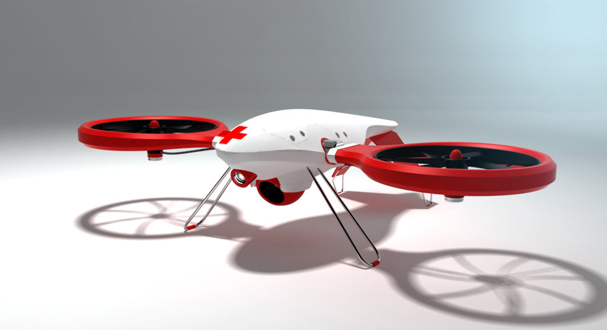
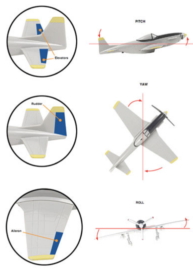
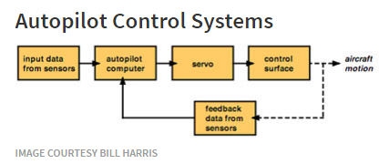

What Makes Autopiloting Possible?
Automatic Flight Control System
Autopilot is a complex algotrithm of flight control system that enables an aircraft to fly on its own, without pilots having to take total control with hands, on operation of flight via flight control systems. This phenomenen is knows as the Automatic Flight Control System which is embedded in most of the commercial jets. In addition to flight control systems, avionics in autopilot include electronics for communications, navigation, collision avoidance and weather.
High speed processors are the key for autopilot to work. The processors communicate with sensors located on the major control surfaces. These processors gather information from equipments in the plane including major equipments like gyroscopes, accelerometers, altimeters, compasses and airspeed indicators.  After the data has been gathererd, the processors in the AFCS, using complex calculations, compare it with set of control modes. Control mode is a system that has the information that pilots set for the flight operation such as air speed to be maintained, the direction, flight path, pitch of aircraft, engine power, majorly the operation actuators do. Once the comparision is done, a response to autopilot computer, the flight control system, is sent. The control system, in response, makes necessary changes for flight motion of the aircraft.
Autopilot actually is an implementation of Control System. Control System is a device that commands, manages, directs and regulates the behaviour of other devices or systems. There is a loop of commands that are set and the feedback it receives from other systems. The pilot sets the flight operation values such as altitute, flight path, pitch and roll on the control yoke, the throttle, rudder, all in control modes and other parts of the aircraft where autopilot is embedded. After the commands are set, the feedback is provided from sensors, the control system computes the data, via servo, and sends values on cockpit instruments for pilot to monitor the flight data. All in all, this is how an autopilot embedded system works.
Many modern autopilots can receive data from a Global Positioning System (GPS) receiver installed on the aircraft. A GPS receiver can determine a plane's position in space by calculating its distance from three or more satellites in the GPS network. With such advance systems embedded in an autopilot, it can do more than just keep the plane straight, it can execute a flight plan. Not only it can make a flight plan, it also can land the aircraft with the help of Instrumental Landing System(ILS), a sytem that sends signal from the runway to the plane sensors. It guides a jet to the runway, as it controls it's altitude and direction for touchdown.